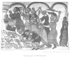

The Kebra Nagast, by E.A.W. Budge, [1922], at sacred-texts.com
59. HOW THE KING QUESTIONED AN EGYPTIAN, THE SERVANT OF PHARAOH
And Solomon left that place, and he met a noble of the nobles of Egypt, whom King Pharaoh had sent unto him with a gift; and there was an abundance of treasures with him, and he came and made obeisance to the King. And Solomon the King made haste to question him, even before he had presented his gift and embassy, and said unto him, "Hast thou seen men of Ethiopia fleeing by this road?" And the ambassador of Pharaoh answered and said unto the King, "O King, live for ever! My lord, King Pharaoh, sent me unto thee from Alexandria. And behold, I will inform thee how I have come. Having set out from Alexandria I came to Kâhĕrâ (Cairo), the city of the King, and on my arrival these men of Ethiopia of whom thou speakest arrived there also. They reached there after a passage of three days on the Takkazî, the river of Egypt, and they were blowing flutes, and they travelled on wagons like the host of the heavenly beings. And those who saw them said concerning them, 'These, having once been creatures of earth, have

Click to enlarge
Plate XIII. The Slaughter of the Innocents
{kind=link}
become beings of heaven.' Who then is wiser than Solomon the King of Judah? But he never travelled in this wise in a wagon of the winds. And those who were in the cities and towns were witnesses that, when these men came into the land of Egypt, our gods and the gods of the King fell down, and were dashed in pieces, and the towers of the idols were likewise broken into fragments. And they asked the priests of the gods, the diviners of Egypt, the reason why our gods had fallen down, and they said unto us, 'The Tabernacle of the God of Israel, which came down from heaven, is with them, and will abide in their country for ever.' And it was because of this that, when they came into the land of Egypt, our gods were broken into fragments. And thou, O King, whose wisdom hath no counterpart under the heavens, why hast thou given away the Tabernacle of the Law of the Lord thy God, which thy fathers kept pure for thee? For, according to what we hear, that Tabernacle used to deliver you out of the hand of your enemies, and the spirit of prophecy, which was therein, used to hold converse with you, and the God of heaven used to dwell in it in His Holy Spirit, and ye are called men of the house of God. Why have ye given your glory to another?" And Solomon answered in wisdom and said, "How was he (i.e. David) able to carry away our Lady, for she is with us?"